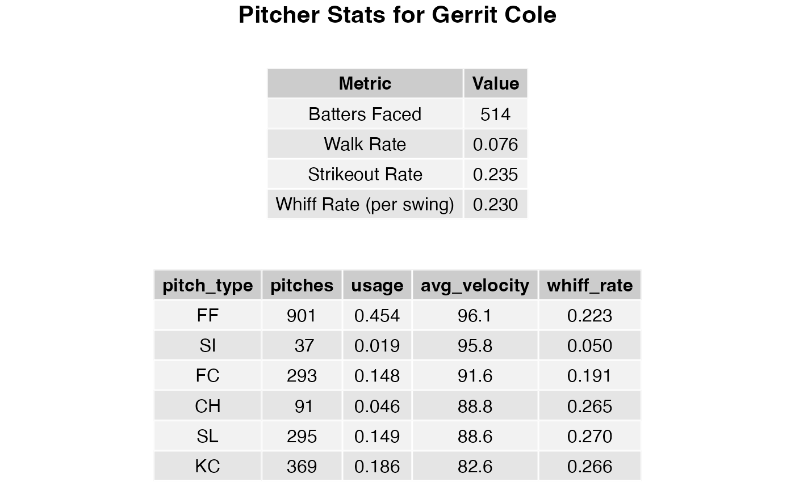
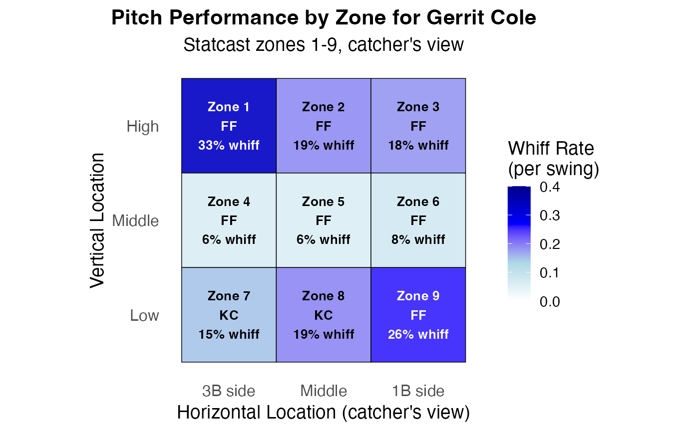

This function fetches Statcast data for a given pitcher or list of pitchers, calculates key performance metrics, and generates a strike zone heatmap displaying the most frequently used pitch type and whiff rate for each zone.
Usage
generate_pitcher(player_ids, start_date, end_date, game_types = c("R", "PO"))Arguments
- player_ids
A vector of numeric player IDs representing the pitchers to analyze.
- start_date
A character string representing the start date of the data range in the format "YYYY-MM-DD".
- end_date
A character string representing the end date of the data range in the format "YYYY-MM-DD".
- game_types
Character vector of Baseball Savant game type codes to include. Default
c("R", "PO")is regular season and postseason; add"S"to include spring training.
Value
For a single ID, a ggplot object showing the strike zone heatmap with the most frequently used
pitch type and whiff rate for each zone (or NULL, invisibly, when no data is found).
For several IDs, a named list with one such plot per pitcher, named by player ID.
Additionally, tables summarizing general pitching statistics and pitch-specific statistics are drawn
for each pitcher.
Details
The function performs the following steps for each pitcher separately:
Fetches player names using the MLB Stats API.
Fetches Statcast data from Baseball Savant for the pitcher and date range. Only
start_dateandend_daterestrict the dates; there is no season filter.Calculates general statistics: batters faced, walk rate, strikeout rate and whiff rate.
Generates pitch-specific statistics: pitch count, usage, average velocity and whiff rate.
Creates a strike zone heatmap of the most frequently used pitch type and the whiff rate in each of the nine Statcast strike zones.
Definitions:
Plate appearances (batters faced) are rows with a non-empty
eventsvalue, excluding baserunning events such ascaught_stealing_*andpickoff_*andtruncated_pa.Strikeout rate = (
strikeout+strikeout_double_play) / PA.Walk rate = (
walk+intent_walk) / PA. Hit-by-pitch is not counted as a walk.Whiff rate = whiffs / swings. Whiffs are
swinging_strike,swinging_strike_blocked,foul_tipandmissed_bunt; swings are whiffs plusfoul,foul_buntandhit_into_play. Counting foul tips as whiffs matches Baseball Savant's Whiff%.
The heatmap is drawn from the catcher's view: zone 1 is top-left (third-base side, high) and zone 9 is bottom-right (first-base side, low).
Note
This function requires an active internet connection to fetch data from the MLB Stats API and Baseball Savant.
Examples
# \donttest{
# Example usage:
pitcher_ids <- c(543037) # Gerrit Cole
start_date <- "2024-01-01"
end_date <- "2024-12-31"
generate_pitcher(player_ids = pitcher_ids, start_date = start_date, end_date = end_date)
#> Fetching Statcast data for pitcher 543037 ...


# }